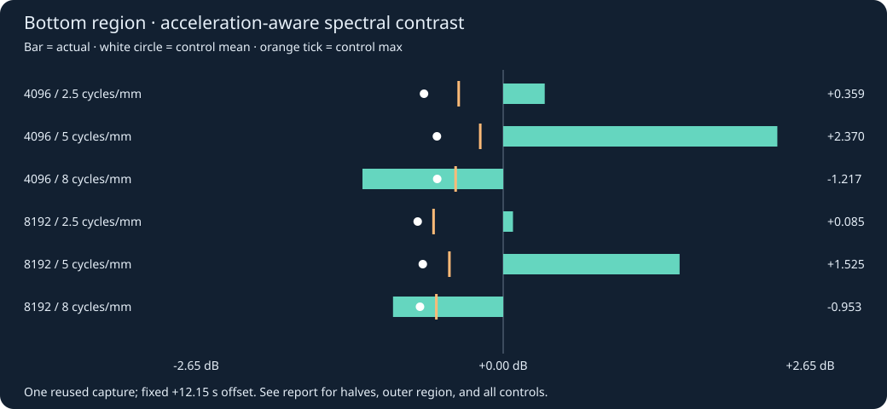

Auditions plus acceleration-aware single-voice spectral diagnostics. No calibrated profile or physical motor identification.
Not matched to recording loudness. No per-file normalization, new trim, or time stretch.
Recording playback is a derived PCM16 copy of the existing AAC decode; quantization is documented in the report.
Fans are omitted from synthesis, not assumed off in the printer. The 8-cycle audio is the original baseline.
Compare a moment
Approximate correspondence: recording = local + 12.15 s, frozen from the earlier envelope fit.
Buttons pause all four players and request seeks only within available seekable ranges; they never start playback.
Seek completion is checked after the seeked event, not inferred from loading readiness.
Full default ABZE voices and harmonics · fixed gain · motors only.
Acceleration-aware evidence
The plot uses a separate A-only fundamental chirp, not the full audition mix.
Its entire window follows synthesized signed displacement and acceleration. Scores are arbitrary spectral contrast, not likelihood or significance.

2.5 and 5 were selected after examining this same recording. Stationary tones are suppressed by regional median whitening,
but harmonic ambiguity and background/AGC confounds remain. The offset and early/late checks are not independent validation.